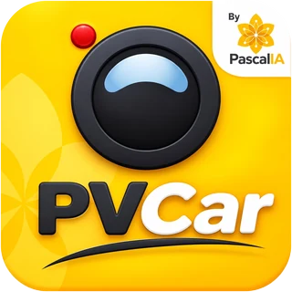

Pon el teléfono en un soporte fijo, mirando hacia la vía,y toca Grabar.
El acta incluye la huella SHA-256 del archivo, la telemetría y tu firma. Se genera en el teléfono: nada se envía a internet.
Alcanza para — continuas. Al llenarse se borra el clip más antiguo que no esté protegido.
Un golpe por encima del umbral pasa el clip actual y el anterior a la bóveda. En vías destapadas usa «Baja».
Aún no ha oído nada.
Apagado por defecto. En algunos Android no puede usarse a la vez que el copiloto por voz.
Videos, fotos, ubicación y telemetría se guardan solo en el almacenamiento privado de esta app en tu teléfono. PV Car no los envía a ningún servidor, no usa analítica ni publicidad, y nunca lee tu galería. Solo salen del teléfono si tú los descargas o compartes.
Responsable: PascalIA · Política de datos · Términos · Eliminar mis datos · Aviso legal
Versión demo de PV Car. Funciona de verdad con la cámara y los sensores de tu teléfono; lo que grabes queda solo en este navegador y nadie más lo ve.
Pediremos cámara, ubicación y, si activas el copiloto, micrófono. Todo queda en el teléfono.
Instala el teléfono en un soporte fijo antes de arrancar y no lo manipules mientras conduces. Para usar las manos libres está «Hola Pascal».
Mantén la app abierta y la pantalla encendida: el navegador detiene la cámara si sales de la app o bloqueas el teléfono.